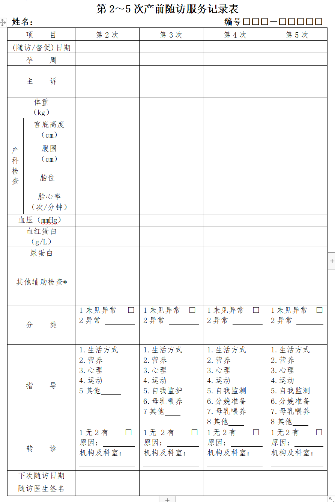
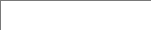
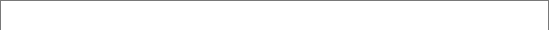

第n次产前服务记录表

项目

第二次
（随访/督促）日期
孕周
主诉
体重（kg）
官底高度（cm）
腹围（cm）
胎位
胎心率（次/分钟）
血压
/
血红蛋白（g/L）
尿蛋白
其他辅助检查*
分类
指导
产科检查
转诊建议
原因：________________________________________
机构及科室：_______________________________________________________
下次随访日期


随访医生签名

*
*
*
*
字段说明
• 姓名、编号：从基本信息表读取
• 指导：
第 2 次随访指导：生活方式、营养、心理、运动、其他__________________
第 3 次随访指导：生活方式、营养、心理、运动、自我监护、母乳喂养、其他__________________
第 4、5 次随访指导：生活方式、营养、心理、运动、自我监护、分娩准备、母乳喂养、其他__________________
姓名
编号

随访状态


失访日期/
死亡日期
失访原因/
死亡原因
默认选择正常，后面两个字段不显示
选择失访，后面填写失访日期和失访原因
选择死亡，后面填写死亡日期和死亡原因
参考表单